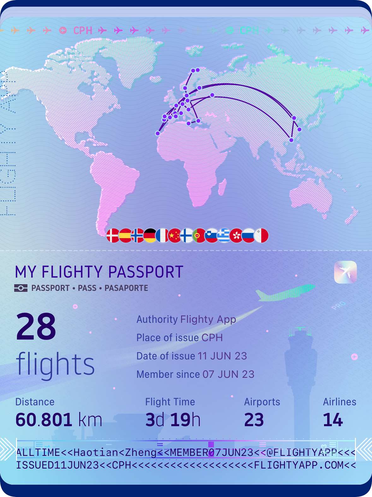

Current scope
Human cohorts, clinical collections, wastewater systems, and plasmid-aware pipelines.
A clean foundation for a scientific portfolio on plasmids, microbial ecology, and longitudinal metagenomics.
This version leaves personal details intentionally light, so the visual system can become the reusable shell for future content.
Human cohorts, clinical collections, wastewater systems, and plasmid-aware pipelines.
Computation first, with ecological interpretation and reproducible data synthesis.
University of Helsinki, with room for affiliations, projects, and collaborators later.
Three anchor publications are kept as simple, readable product tiles.
Defense systems decline through treatment, while plasmids remain stable reservoirs shaping phage-host dynamics.
A long-fragment amplicon strategy for stronger phylogenetic and taxonomic resolution across microbial communities.
Platform validation of accurate metabarcoding across mock and environmental sample sets.
Numbered moments displayed like a quiet product gallery.
A postdoctoral beginning in Helsinki, reframed as a clean shift into collaboration.
Independent first-author publication in Microbiome.
The diploma marking the close of one stage and the start of another.

A 2023 travel record, kept as a small personal note beneath the research archive.
Research links, code, and collaboration channels.